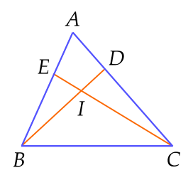
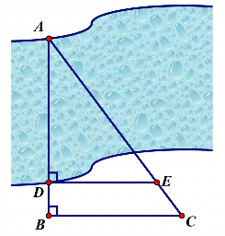

Câu 13. Đại số
Phần II — Trắc nghiệm đúng hoặc sai
0,88 điểm
Một xưởng cơ khí lập kế hoạch sản xuất $90\,000$ chi tiết máy trong $x$ (ngày). Nhờ cải tiến kĩ thuật, xưởng đã hoàn thành kế hoạch sớm $12$ ngày và sản xuất vượt mức $150$ chi tiết máy.
(Nhấp vào ô màu vàng để chọn đúng / sai)
Mỗi ý a), b), c)… là một phát biểu độc lập: nhấp vào ô để chọn Đúng/Sai,
0,22 điểm mỗi ý.
Câu 14. Hình họcCó vẽ hình
Phần II — Trắc nghiệm đúng hoặc sai
0,88 điểm
Cho hình vẽ.

Trên cạnh $AB, AC$ lần lượt lấy các điểm $E, D$ sao cho $AC=3AE$ và $AD=\dfrac{1}{3}AB$ . Gọi $I$ là giao điểm của $BD$ và $EC$ . Biết rằng $\Delta ABD \backsim \Delta ACE$ .
(Nhấp vào ô màu vàng để chọn đúng / sai)
Mỗi ý a), b), c)… là một phát biểu độc lập: nhấp vào ô để chọn Đúng/Sai,
0,22 điểm mỗi ý.
Câu 15. Đại số
Phần III — Trắc nghiệm trả lời ngắn
0,46 điểm
Cho biểu thức $A=\dfrac{3}{x-2}-\dfrac{12}{2-x}$ $(x ≠ 2)$ . Giá trị của biểu thức $A$ tại $x=4$ bằng bao nhiêu? (Kết quả ghi dưới dạng số thập phân)
Trả lời ngắn — gõ kết quả, kèm đơn vị nếu đề hỏi đơn vị.
Câu 16. Đại số
Phần III — Trắc nghiệm trả lời ngắn
0,46 điểm
Kết quả của phép chia $\dfrac{x}{x^2 - 1}:\dfrac{x}{x+1}$ với $x ≠ 1, \, x ≠ -1$ và $x ≠ 0$ có dạng $\dfrac{a}{bx + c}$ . Tính $a + b + c$ .
Trả lời ngắn — gõ kết quả, kèm đơn vị nếu đề hỏi đơn vị.
Câu 17. Đại số
Phần III — Trắc nghiệm trả lời ngắn
0,46 điểm
Người ta tiến hành đo đạc các yếu tố cần thiết để tính chiều dài của một cây cầu dự kiến bắc qua một hồ nước mà không cần phải đo trực tiếp trên mặt nước.

Biết $BD=18$ m, $DE=38$ m và $BC=44$ m (giả sử $DE$ // $BC$ ). Khi đó, chiều dài $AD$ của cây cầu là bao nhiêu mét? (Kết quả làm tròn đến hàng đơn vị)
Trả lời ngắn — gõ kết quả, kèm đơn vị nếu đề hỏi đơn vị.
Câu 18. Đại số
Phần III — Trắc nghiệm trả lời ngắn
0,46 điểm
Cho $x, y, z ≠ 0$ và $x+y+z=0$ . Tính giá trị biểu thức $A=\dfrac{xy}{x^2+y^2-z^2}+\dfrac{yz}{y^2+z^2-x^2}+\dfrac{zx}{z^2+x^2-y^2}$ . Ghi kết quả dưới dạng số thập phân.
Trả lời ngắn — gõ kết quả, kèm đơn vị nếu đề hỏi đơn vị.
Câu 19. Đại số
Phần IV — Tự luận
1,83 điểm
Cho hai biểu thức $A=\dfrac{x-10}{x-2}$ và $B=\dfrac{x}{x-2}+\dfrac{2}{x+2}+\dfrac{8}{x^2 - 4}$ với $x ≠ ± 2$ .
a) Tính giá trị của biểu thức $A$ khi $x=4$ .
b) Chứng minh $B=\dfrac{x+2}{x-2}$ .
Bài làm của bạn:
Câu 20. Hình họcKhông vẽ hình
Phần IV — Tự luận
1,83 điểm
Cho $\Delta ABC$ vuông tại $A$ $(AB \lt AC)$ . Kẻ tia phân giác của góc $B$ cắt $AC$ tại $E$ . Từ $C$ kẻ $CD$ vuông góc với tia $BE$ ( $D$ thuộc tia $BE$ ).
a) Chứng minh $\Delta ABE \backsim \Delta DCE$ .
b) Chứng minh $\widehat{DCE}=\widehat{DBC}$ từ đó chứng minh $DC^2=DB . DE$ .
Bài làm của bạn: